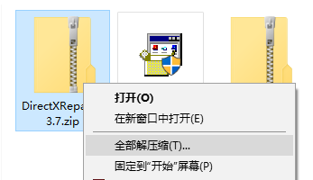

模拟器安装及使用
软件介绍
凤凰模拟器app是一款游戏模拟工具，由德国人开发，这款软件可以让你通过安装相关软件，完美模拟飞行模式，开车已经不刺激了，翱翔天空才是每一个人的梦想，凤凰模拟器就是带你翱翔的旋风。
本文所对应版本为V4.0.m。
相关软件下载
链接：https://pan.baidu.com/s/190TOC1LI9J6yu_Jk10httQ 提取码：pl91
或扫码下载：
软件安装及调试
1. WinXP准备工作
Tips：win7及以上版本可跳过此步骤。
双击下载文件中的NetFx20SP2_x86.exe，
2. 安装DirectX修复工具
在下载文件夹中找到DirectXRepair_v3.7.zip，右键单击，在WinXP/Win7中单击全部提取···，在Win10中为全部解压缩···；

DirectXRepair_v3.7的文件夹，并打开；WinXP/Win7双击
DirectX Repair.exe，Win8/Win10双击DirectX_Repair_win8_win10.exe；
3. 模拟器安装
完成上述操作后，在下载文件夹中找到PhoenixRC.zip，进行与上一步相同的“提取/解压缩”操作，根据提示，提取出名为PhoenixRC的文件夹；
PhoenixRC.exe，双击即可开始使用：
PhoenixRC.exe处右键单击，选中发送到后点击桌面快捷方式，下次即可在桌面上双击图标运行了。
4. 模拟器第一次使用调试
- 配置新遥控器：
- 一直点“下一步”直至“中立位置”界面；
- 油门杆置于中立稍靠下位置点击下一步，按要求用摇杆画圆，并确保摇杆触及四角，划两到三圈后油门回中；
- 继续一直点“下一步”直至“中立位置”界面，确保油门处于中立位置，点击下一步；
- 引擎推至最高位置：右手；
- 桨距推至最高位置：右手；
- 方向舵推至最右位置：左手；
- 升降舵推至最高位置：左手；
- 副翼舵推至最右位置：右手；
- 忽略之后步骤一直点击直至完成。
点击链接访问：https://www.bilibili.com/video/av46811793
5. 选择模型、场地等
- 选择模型---更换模型---H……---E……---Align T-Rex 500；
- 选择场地---更换场地---Flying Field；
- 查看信息---屏幕显示---模拟速度---调节至80%；
- 训练模式---悬停训练：
- 下方练习模式：仅副翼--仅升降--所有控制通道；
| 操纵杆名称 | 旋翼机别名 | 在旋翼机中的特性 |
|---|---|---|
| 引擎 | / | 电机 / 发动机转速 |
| 桨距 | / | 直升机桨距 |
| 副翼舵 | 横滚 / 滚转 | 左右方向移动 |
| 升降舵 | 俯仰 | 前后方向移动 |
| 方向舵 | 偏航 / 转向 | 转变航向 / 转向 |
点击链接访问：https://www.bilibili.com/video/av46833961
6. 校准遥控器
点击链接访问：https://www.bilibili.com/video/av46835341
The end.